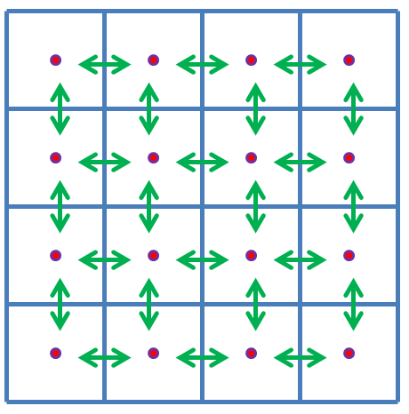

A grid based approach is a very popular technique for solving 3D fluid flow for astrophysical problems. The solution on a domain is discretized (blue cells below), and one solves for the solution to the fluid variables as a function of discretized timesteps at each local cell. The cells communicate to their adjacent neighbors: the Riemann problem at each of the cell interfaces is solved to calculate the flux (green arrows below) of the conserved fluid variables into or out of the cell. Such an approach leads to a correct solution to large scale fluid flow for both shocks and smooth flows. A number of developed code that solve the Euler and MHD equations exists for astrophysical research (Ramses, Athena, and Arepo, just to name a few).

The Riemann solvers presented in the modules are solved "exactly" using an iterative method (Newton-Raphson). I start solving the shock structure from both the left and right sides using the jump conditions and making an initial guess for some of the unknown fluid variables. I then calculate how well the contact discontinuity at the center matches its jump conditions and refine my guesses using numerical derivative information of the errors and iterate until minimal error (<10e-8) is reached. In the MHD case, I always assume strong shock jump conditions for simplicity so rarefaction fans are not resolved. Many 3D fluid solvers use approximate non-iterative solvers for faster computation.
The numerical technique for solving the Euler shocks is primarily based on the reference Toro (2009) [Riemann solvers and numerical methods for fluid dynamics: a practical introduction]. The module I present is a research-quality solver, useful for serving as a benchmark to test approximate solvers. The MHD shock solver is based on the approach described in Dai+ (1994) [An approximate Riemann solver for ideal magnetohydrodynamics].